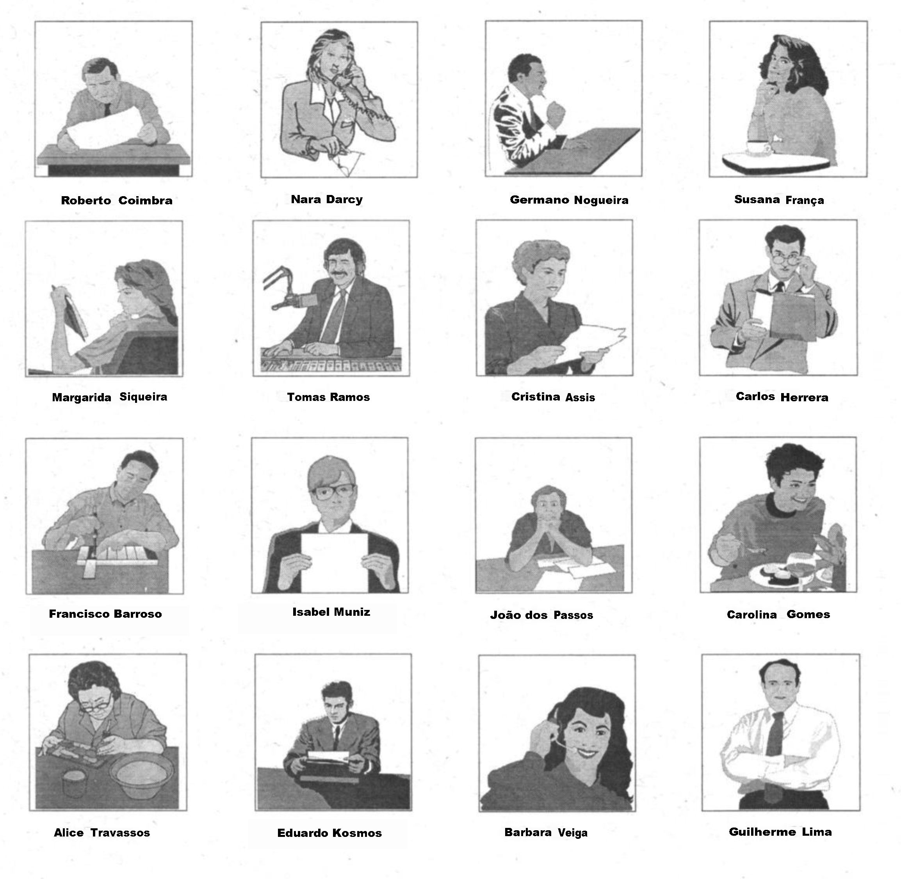
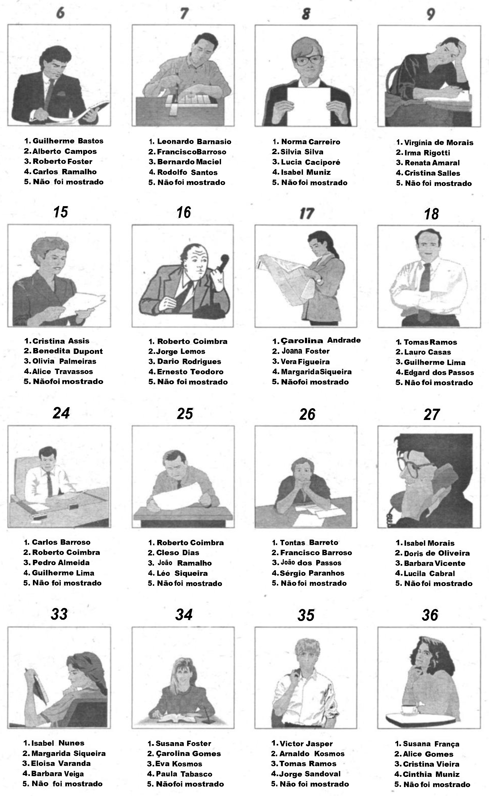

Teste de Memória Visual
Este teste avalia sua capacidade de memorizar rostos e nomes e recuperá-los posteriormente.
Fase 1: Memorização
Você terá 2 minutos para memorizar uma página contendo rostos e nomes. Concentre-se em detalhes únicos de cada pessoa.
Fase 2: Evocação
Em seguida, você terá 3 minutos para responder a 36 questões. Você deve identificar o rosto correspondente ao nome ou marcar "5" se não estiver presente.
Certifique-se de que seu áudio está ligado.
Memorize os Rostos

Restante


RELATÓRIO DE DESEMPENHO
APTO
Parabéns! Excelente desempenho.
VOCÊ FICOU
INAPTO!
INAPTO!
Tente Novamente
Rostos (x1)
Ausências (x2)
Erros
Pontuação Final
Meta: 46
Detalhamento das Respostas
Q